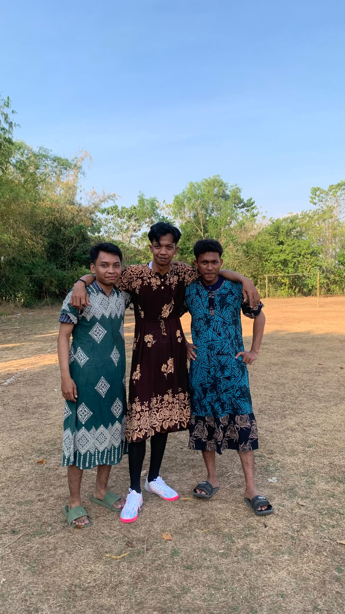
17 Agustus 2026Kegiatan Bermain Bola
Kegiatan bermain bola bersama masyarakat dalam rangka memeriahkan 17 Agustus di Kelurahan Mattompodalle.
Baca Selengkapnya →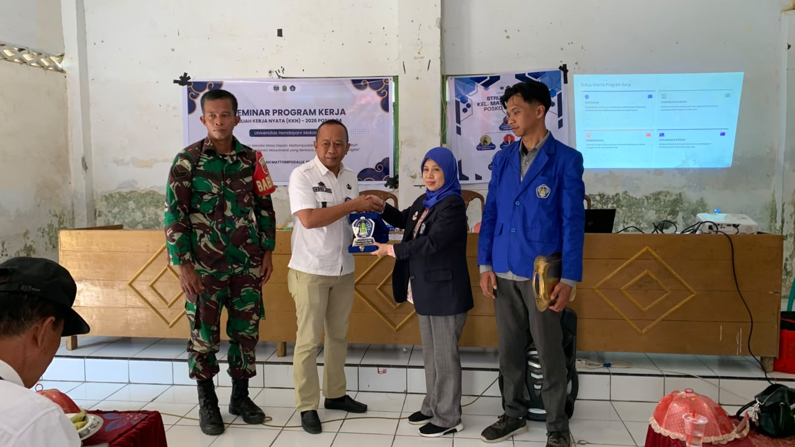
12 Agustus 2026Seminar Program Kerja
Kegiatan seminar program kerja untuk pemaparan program kerja yang akan dilakukan.
Baca Selengkapnya →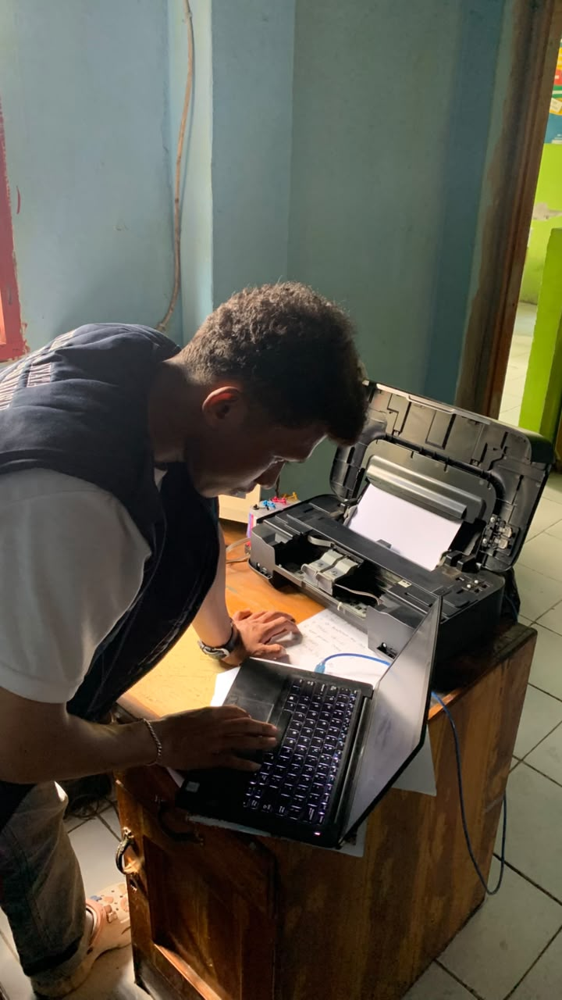
11 Agustus 2026Troubleshooting Printer
Kegiatan perbaikan dan pemeliharaan printer oleh anggota KKN untuk mendukung operasional administrasi.
Baca Selengkapnya →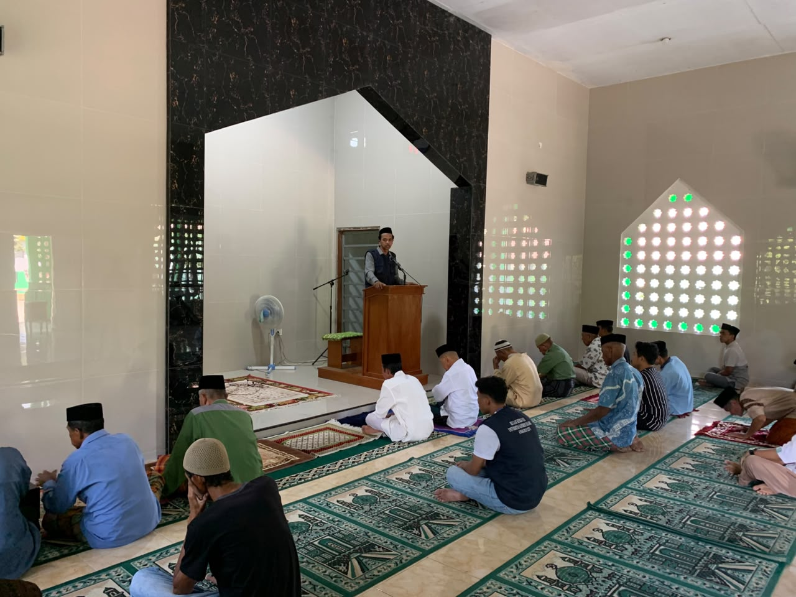
7 Agustus 2026Khotbah Jumat
Ceramah singkat yang dibawakan oleh anggota KKN di Masjid AT Tauhid,Mattompodalle.
Baca Selengkapnya →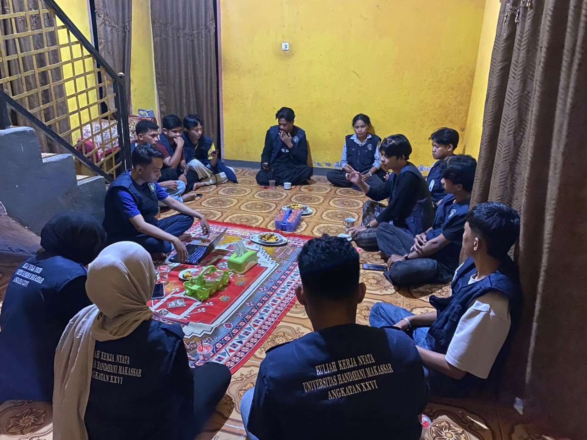
6 Agustus 2026Rapat Koordinasi Kecamatan (Korcam) Polut
Pertemuan dan rapat koordinasi antar posko KKN di tingkat Kecamatan Polombangkeng Utara.
Baca Selengkapnya →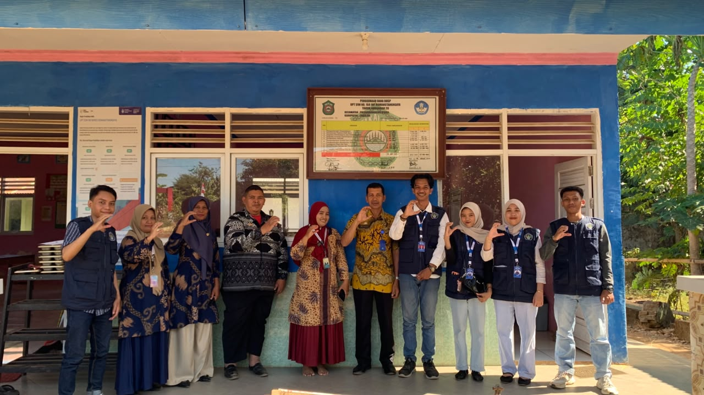
6 Agustus 2026Observasi dan Analisis Permasalahan SD 168 ROMANGTANNGAYA
Observasi dan analisis permasalahan yang ada di SD 168 ROMANGTANNGAYA.
Baca Selengkapnya →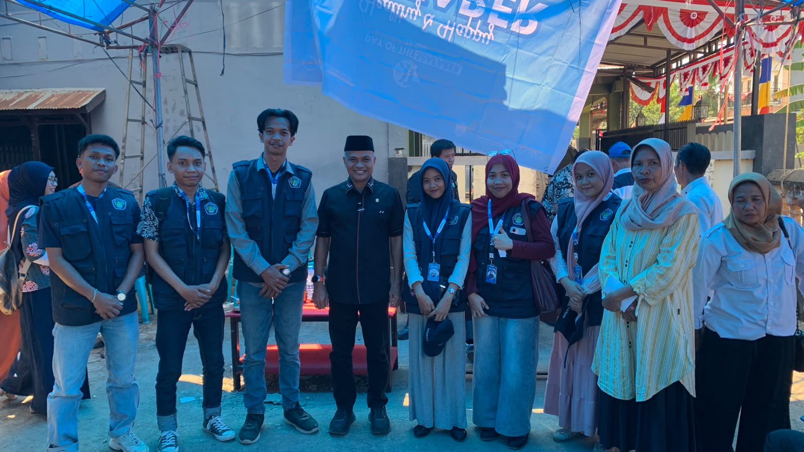
5 Agustus 2026Pertemuan dengan bapak Mallarangan Tutu.
Silaturahmi mahasiswa KKN dengan bapak Mallarangan Tutu dalam rangka reses di Kelurahan Mattompodalle.
Baca Selengkapnya →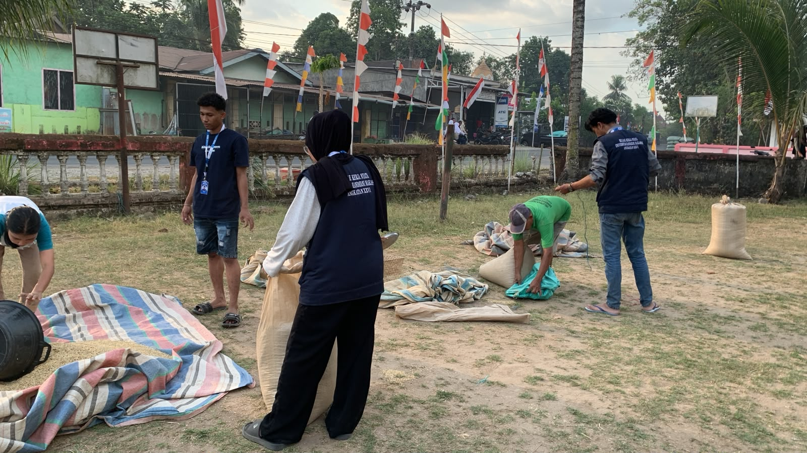
4 Agustus 2026Kegiatan Gotong-Royong
Kegiatan gotong-royong membersihkan dan membantu warga sekitar untuk meriahkan acara 17 agustus di Kel Mattompodalle.
Baca Selengkapnya →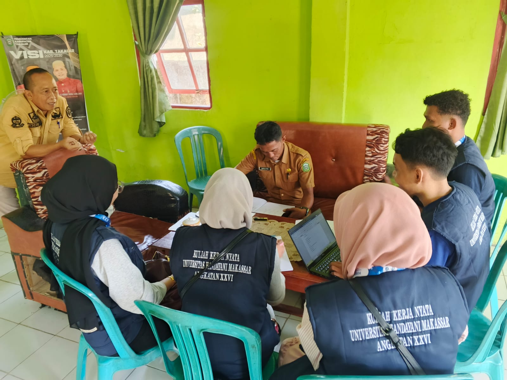
4 Agustus 2026Observasi & Analisis permasalahan
Kroses kegiatan observasi dan menganlisis masalah yang ada pada kelurahan Mattompodalle.
Baca Selengkapnya →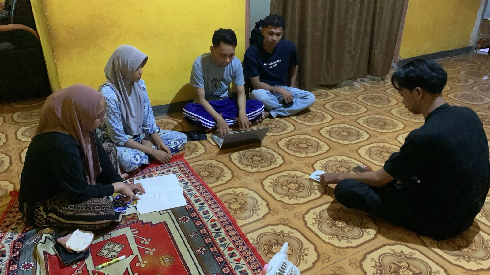
3 Agustus 2026Pembahasan Program Kerja
Proses kegiatan rencana Program Kerja yang akan dibuat oleh TIM kami.
Baca Selengkapnya → 3 Agustus 2026
3 Agustus 2026
Proses Pemasangan Spanduk
Kegiatan pemasangan spanduk di depan posko 4.
Baca Selengkapnya →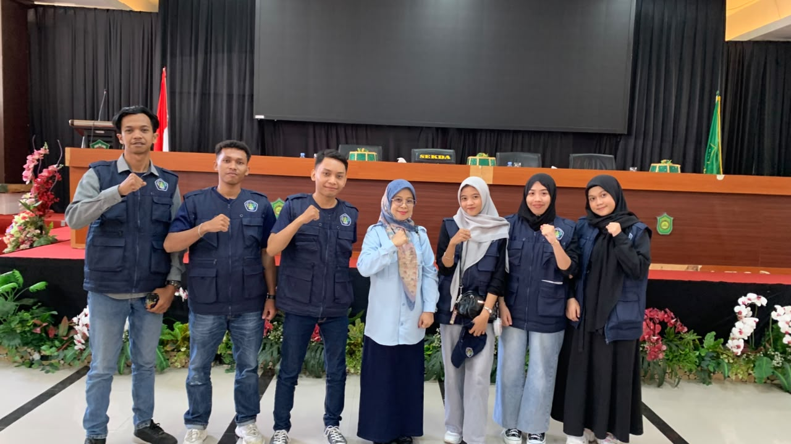
3 Agustus 2026Penyerahan Mahasiswa KKN
Kegiatan penyerahan mahasiswa KKN Angkatan 26 oleh pihak kampus kepada pemerintah setempat di Kelurahan Mattompodalle.
Baca Selengkapnya →